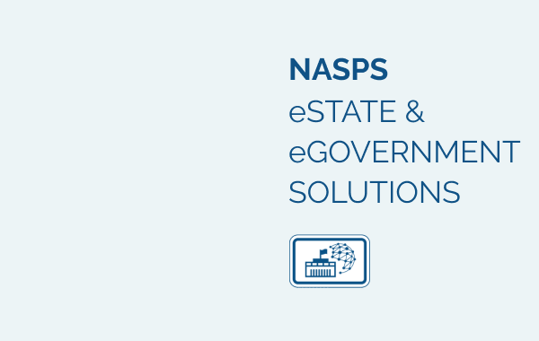

Electronic State (eState) is a model for transforming the management of information aspects of state and government activities using information-computer technologies and systems to make state and governments activities more accessible, more efficient and more accountable to citizens, public and business organizations.

eState implies to support through information-computer technologies for activities of:
- executive power (e-government)
- parliamentary (e-parliament)
- judiciary (e-justice) institutions
eState Goal and objectives:
Creation of preconditions for partner relationships between the citizens and the government, comprehensive development of all citizens regardless of their social status or residence
Free access of all citizens to the governmental services and information
Improvement of state governance systems
Avoidance of corruption and abuse of power based on the implementation of the state-of-the-art management principles and edge innovation technologies
Interactions inside the “Electronic State”:
- State authorities and citizens (Government - to - Citizen, G2C)
- State authorities and business (Government - to - Business, G2B)
- State authorities and government employees (Government - to - Employee, G2E)
- Between the state authorities (Government - to - Government, G2G)
eGovernment solutions
eGovernment is universal multilevel system which:
- Provides citizens free access to information about state authorities activities and administrative services
- Delivers administrative functions based on innovative information and communication technologies
- Offers guaranteed social services and targeted help
- Establishes transparent and effective mechanism of state procurement
- Maintains the integrated reference and information system
- Provides legally significant electronic interaction on the ground of digital signature usage
- Manages multifunctional integrated centers of the administrative services network
- Supports the national payment system (link 1)
- Creation of a registry of population and automated generation of voters lists (link 2)
- Accounting of taxes (link 3) and other payment obligations
- Registers Migration flows
- Registers usage of land
- Plans and controls state authorities activities
E-card as an instrument of the access to the resources of the “Electronic state”
E-card it is a secure and personalized card with an electronic medium which will provide the user access into a system and will define the user rights and may contain the customized applications (banking, transport, and others applications).
At the same time, as the instrument of access to the eState resources, it is possible to use different devices: computer, pad, and smartphone with NFC, info kiosk, POS-terminal.
eState advantages
Realization of eState solutions will create:
- National information and communication infrastructure for the providing of access to informational resources of state authorities
- Information exchange platform and systems of electronic documents flow for the state entities
- Single integrated portal for “Electronic state” and interactive portals of state authorities
- Information systems “National population registry” (link 5) and “National registry of legal entities”
- National electronic archive
- National systems of electronic state procurement and electronic payments and accounting of financial flows
- Integrative information and analytical system of data exchange in the social sphere
- Information and analytical system for management reports generation, analysis, forecasting and planning, monitoring activity of state authorities
- PKI for the providing of all citizens with a digital signature on a free basis
- A national network of integrated multifunctional centers of administrative services and network-based of self-service kiosks for providing access to the “Electronic state”
- Infrastructure for the providing of specialized access to the informational resources (libraries, schools, etc.)
- Smart card with identification application and digital signature as a tool to access to the “Electronic state”
- Infrastructure for the maintenance of the life cycle of electronic cards with identity application and digital signature
- Centralized system of telephone calls processing (Contact-center)
- A complex system of information protection
- Any solution of eState can be upgraded according to actual tasks and missions of the State and Government
Advantages for the eState
Using of the digital signature, distance receiving administrative services, improvement of interdepartmental document flow, secure maintaining registers, monitoring of work of the state departments and many other things of eState are obligatory for the creation of the modern State of new quality.
Introduction of eGovernment solutions, first of all as instruments of public administration, will have an effect on all organizational and functional structure of the State, and their improvement and optimization will release existing and will mobilize new funds into the national economy.
Together with it, the reduction of a human factor progressively will lead to a reduction of corruption and level-up of the security (link 6) in the country that citizens and the world community will undoubtedly estimate positively.
Economic effect
Introduction of eGovernment solutions increases labor productivity of authorities and state administration in general, reduces costs of maintaining and updating of the state registers, reduces the cost of providing administrative services, increases control of financial flows, and allows more effective planning of State development.